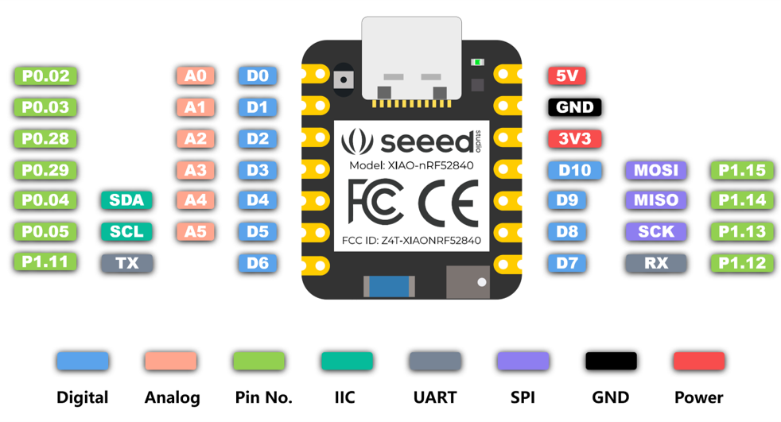
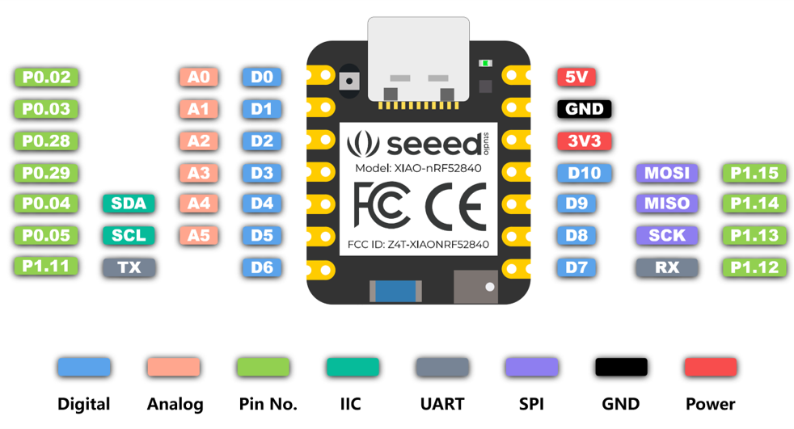

The Cross Country team has been experiencing injuries over the past four years including shin splints, knee pain, and Achilles pain. Multiple studies have attributed these injuries to constant running on hard surfaces. In addition, knee and heel pain has also been attributed to bad foot placement. A solution should be created to help reduce or mitigate the amount of injuries.

Contact professionals include Covalent Health's Dr. Gabriel Suarez and Frankie Ruiz, a nike running coach.


Sources
Source 1: Trailrun Magazine
In the magazine, the question of whether running shoes cause injury is put up to research and the answer is no.There hasn’t been a correlative link between injuries and running shoes. In experiments, multiple foot types were given different shoes and no correlation was found. Running shoe company innovation has rather been based on hype and marketing. Even though running shoes have consistently gotten better, the percent of injury has remained stable. Instead the cause on injury coming from Dr. Reed Ferber is from doing too much,and too fast. Minimalist shoes aren’t to blame as people without comprehensive training would use the shoe and get injured. The best option is ample amount of cushioning, ample amount of protection, and good running form.In addition, strength work helps a general boost. This article helps focus my project now more less on the actual shoe strength and more on form. Foot placement, foot stretch, and other factors are a big reason for the injuries helping narrow down the variables to help control injury. There are still questions on pressure on the foot takes and foot strength is another variable I hadn’t thought about. Though the article validates my project by showing simple shoe padding can’t just complexity prevent injury as a whole.
Metzler, B. (2021, June 4). What You Need To Know About Running Shoes And Injuries. Trail Runner Magazine; Trail Runner Magazine. https://www.trailrunnermag.com/gear/shoes/what-you-need-to-know-about-running-shoes-and-injuries/#
Source 2: Mayo Clinic
Achilles Tendinitis is the overuse injury of the Achilles tendon, a band that connects calf muscles at the lower back of the lower leg to your heel bone. Achilles tendinitis can lead to tears or ruptures requiring surgery. It most commonly occurs due to sudden increased intensity or duration of runs. It is most common in runners and middle aged people who play sports. Symptoms include mild ache in the back of the leg and more severe pain after prolonged running. Causes are repetitive strain or intense strain on the tendon which is used to walk and run. Factors that can cause are older age, flat foot arch, obesity, worn out shoes, colder weather, and running on hilly terrain. Prevention includes avoiding activities with excessive stress including running, stretching, strengthening calf-muscles, gradual increase, and crowd training including swimming. The page shows validity by showing achilles tendinitis as an issue for runners. There is once again a correlation with running impact on the ground and the tear. It is also unique by bringing up a possible factor in multiple injuries, the shoe. The shoe's padding chin wears down overtime eventually not helping the pressure absorbed by the foot. A question. Though the question on terrain still hasn’t been answered and mileage too.
Mayo Foundation for Medical Education and Research. (n.d.). Achilles tendinitis. Mayo Clinic. https://www.mayoclinic.org/diseases-conditions/achilles-tendinitis/symptoms-causes/syc-20369020
Source 3: Temple Health
The temple health page focuses on runner's knee, Iliotibial band syndrome, and jumper’s knee. Runner’s knee is when the cartilage in the knee is irritated due to overuse. It affects over 30% of female runners and 25% of male runners. Now the biggest reasons are due to either running at an incline, increase in mileage of a runner, or increase of speed for a runner. Now why these cause the knee to irritate is the impact on the ground with a solution to stay active during injury being swimming. This also applies to the syndrome where the tendon between your hip and your knee causes irritation with the outer knee and also jumper’s knee where the tendon is overloaded. The page shows validity to the project and is unique by clearly showing knee pain as an issue, though raises more questions. Even though there is a clear correlation between impacting the ground and knee injury, how much pressure on the ground hurts the knee over time. How much average mileage or speed causes injury? Finally, there is a question of whether terrain has any impact.
Saxena, V. (n.d.). What are common knee injuries from running?. Temple Health. https://www.templehealth.org/about/blog/common-knee-injuries-running#:~:text=Runner’s%2520knee%2520%E2%80%93%2520also%2520known%2520as,in%2520your%2520kneecap%2520gets%2520irritated.
Patent 1:
CN211558968U - Insole for preventing running training injury - Google Patents. (2019, September 29). Google.com. https://patents.google.com/patent/CN211558968U/en
Shoe pad for preventing running training injuries. Contains multiple layers include anti-slip layer on top, rebound layer in the middle, and cork layer on the bottom. The cork is positioned at the heel and has an energy absorption layer. The cork has multiple layers with layer one being full palm as the other is half palm. The model looks to have the foot not bend and correct functions of the foot. The insole is more attached to the arch of the foot. It uses artificial cartilage bionic material that can absorb more than 90% of impact energy, convert impact energy into heat, and protect the body from injury. The heat energy is conducted to the cork layer. The patent is a new sole trying to prevent running injury. It does this by correcting foot position, absorbing energy impact, and even having a heating system. Though due to research, the insole might reduce not that much injury. There is still a large importance on foot strength, knee strength, and more. If your body isn’t fit to take the pressure, injury will occur regardless of shoe. Though it does bring up an idea of technology in the sole of shoe that can help with injury.
Patent 2:
US7726206B2 - Foot pressure alert and sensing system - Google Patents. (2007, November). Google.com. https://patents.google.com/patent/US7726206B2/en
Device that monitors pressure and force on the foot and visualizes it instantly. If detected pressure, a signal is sent to the micro computer processor in the shoe and then sends the stat wirelessly to an electronic device. The device then shows the data of the pressure. The sensors are in multiple points in the shoe, lining, and sock. There are primary sensors, or secondary sensors used in a low power mode. Both could even been activated at the same time,The battery would be a minimal size, and weight. It would be rechargeable, and removable battery. A medical node with help of a a microprocessor would process the data and then transmitted to a website. (Stations). The patent is a possible project that can show the pressure on the foot. This is perfect for a project such as mine that would like to detect and collect this data. With this patent first originating in 2007, through modern technology it can be made possible and more efficient. The wireless device connection is now easy with Bluetooth and more. Now the question is the material and resources necessary for the device.
Patent 3:
CN105455304B - Intelligent insole system - Google Patents. (2016c, January 4). Google.com. https://patents.google.com/patent/CN105455304B/en)
Invention that includes a control server, movement identification, control function, and equipment to more service. There is wireless communication between the insole and a control server. Wireless communication module uses Bluetooth mode, WiFi, and more. Can acquire information and send it out. Within the insole is an accelerometer, gyroscope, geomagnetic sensor, photosensitive sensor, pressure sensor, and gps module. The first three are for data for movement in three dimensions. It can detect velocity, movement, angular speed,. Photosensitive can possibly measure the degree of the foot, pressure can measure impact or weight. This patent is another insole patent with more than just pressure sensor, but also additional devices. This allows the device to not just be used for a multitude of purposes. This device would be perfect for a project like mine looking to see the forces impacting the foot and even see the outside facts that contribute to it, such as where on the foot lands.
Requirements
Measurable / Achievable / Relevant / Testable
(1): Device within the shoe, fits and remains within it. Cannot be directly connected by wires to external device outside. How: Chips, sensors, and wires are within the shoe. Use bluetooth to connect to any outside devices.
(2): Minimal changes in the shoe's dimensions. The shoe was created in a certain size for a reason. We don't want to undo that.
(3): Ability to withstand and collect data from at least a normal 5 mile run
(4): Have battery that lasts about 3 days, and rechargeable
(5): Ability to open up, close, and fix the shoe device inside.
(6): Make the shoe device feel light and little increase on the weight of the show.
(7): Ability to replicate in shoes larger or smaller.
(8): Doesn't hinder the runner's normal actions or habits - Can walk, run, and stride normally.
(9): The shoe is safe to use. No electrocution, or cuts will happen to the runner.
(10): Data presented in a clear format for presentation and analysis. Must be relevant and important to the project.
Design Brief: https://docs.google.com/document/d/1NEeEq0OY21zmw6DpTJmg35gO08VWr-JddbYRXi5nfno/edit?usp=sharing
11/7/24: Started coding for the project on arduino.ide. Initial start was rough with complication in finding the right url link to get the right board. After that, srated actual base code though needs to be tested when eletronics arrive.

11/12/24: Continued working on the code making adjustments to accomodate the 6 sensors. The code is having issues being verified, though it is an exit error which can be caused in past experinces by a bad computer or program needing to be restarted. Started research on the pinouts and a notable issues was spotted. There are only 5 analog pinouts wjich may prevent the 6 sensors. Still thinking of solutions for this issues or having to accomodate to this limitation.
 

11/14/24: All the parts have arrived to start working on the actual eletronics. Found out I needed more than what was planned including a bread board, and resistors. Work is progressing to get the first sensor working.

11/18/24: Finsihed the wiring of the first sensor. Issues in coding with inability to get code verified. Other code was tested, verfied, and chip works.

11/20/24: The code has finally been verfied after constant test. The issue was in the serial begin number whcih wa finally fixed with the number was lowered to 9600. Another issues was psotted though with chip not being detcted by the coding program when conncted. Issue will be ought in the next class.

11/22/24: To test the code and sensors, the chip was siwtched out for a Arduino One. When tested, the code worked and the sensors provided data. I was able to do up to three sensors today only restrained by time.Might have to fix how the dta is provided though since when left still, the sensors give of 100 kg of pressure.

12/3/24: STrated working on the Preliminary Design Review due Thursday. Completed the first three sections of introduction, project management overview, and requirement analysis while starting on the fourth part of conceptual design.
12/5/24: Spent the class finsihing up and refining the Preliminary Design Review in class. Added multiple pictures and asked questions on specifc parts such as budget and compliance/standards.
12/9/24: Take some videos and pictures of the project for 2 minute video Prototype/Preliminary Design Review. Shows four pressure sensors working.
12/11/24: A major success happened today with Seeed Studio XIAO-nRF52840 finally working, connecting to the computer, uploading code, and reading pressure data form the sensors. This now opens up the opprutnity to now add bluetooth conecction to export the data on an external website. Hopefully, once accomplsihed, a full prototype can be worked out with eletronics placed inside the shoe.

12/13/24: Tried looking for bluetooth compability with the chip, but struggling with getting code verfied. Issue with board manager.
1/6/25: Keep working on bluetooth compability of the Seeed XIAO, but keep having issues in the code. Even when eveyrthing looks fine, the code hasn't been cleared.
1/8/25: Started working on the 3D modleing of a cart based off the Space Mountain in cart in Walt Disney. Having trouble perfect the front of the cart.

1/10/25: Keep wokring on 3D model adding wheels to the project that can posisbly move. The front though is rough and taking alot of time.

1/14/25: Started printing the 3D model and scanned a green water bottle using an apple iphone. The scan isn't the best due it being done quickly, and the app not being the best quality.

1/16/25: Fixing the model 3D model of the cart because wheels don't move. Added extra decoration to the cart.
1/21/25: Worked on a detailed testing plam for the shoe inclduing a durability test and an accuracy test. The durability test will focus on the eletronics being protcted in the shoe as the accurcay test will look at accurately gathering pressure data
1/23/25: Had meeting with the upper management of Mr. Perez. Discussed solutions to the ahlt in porgress of the shoe inlcluding bluetooth. Bluetooth will now be replaced by an sd-card and approval for a prototype was done. Also future caldenar dates were set.
1/27/25: Started working on the shoe again going under the sole and digging a hole inside of it. The foam is difficulkt to remove from the shoe.
1/29/25: Continued work on the shoe finsihing the hole. Made the decsion to now use a perfboard isntead of a bread board.
1/31/25: Started wokring on molding and casting, begining the one-part mold of a gear. The process had minor problems with leaking in the box to keep the liquid in.
2/5/25: Finsihed the one-part mold, started casting of the gear. Also started optional two-part mold.
2/7/25: Finsihed casting of the one-part mold. Cleaned up the rest of the two-part mold and started the second piece of it. Then updated more of the website adding molding and casting.
2/11/25: Continued working on shoe with planning on the perfboard starting. Newly added daily updates.

2/13/25: Started practcing sodering on other perfboards. I want a clean board to make sure everything works right. Diffuclty in connecting two holes on the perfboard.
2/18/25: Try one at doing the actual perfboard. Had a failure in trying to soder a part of the circuit that required dviding it up into four circuits creating a msaaive bubble.
2/20/25: Try two at the perfboard. Had another failure at the sodering of the wires, splliage into other areas, and burnt wires.
2/24/25: After multiple attempts, transition to KiCad to laser cut a circuit. Issues with intertangled wires though fixed with resistors that act as jumps.

Project Design Review:https://docs.google.com/document/d/124_PuEwWjggoVnyD95xpY3pssSx0LUcl4DyC4YoZ5TE/edit?usp=sharing
Testing Plan: https://docs.google.com/document/d/1F8FAXO26F9ukvqI_ZwiJjIY8CoYVjSz81ZQy9wuw5_E/edit?tab=t.0
Team Meeting: https://docs.google.com/document/d/1G2Lf34_h8EiZy5HUjmRV4et047xEHroDOAFU1RDe3UY/edit?tab=t.0